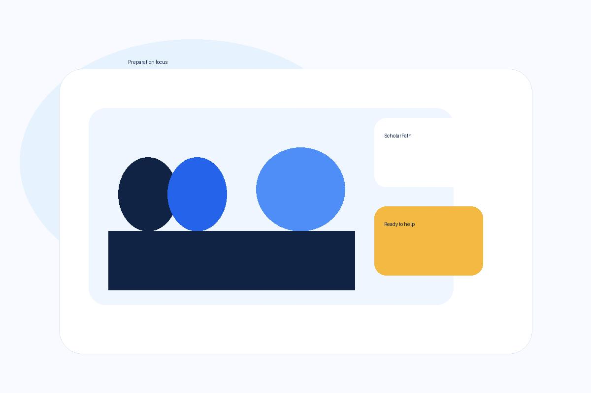

- Review modules early and ask for help before grades slip.
- Record academic achievements in one easy reference.
Example: Asked for feedback after a test and adjusted study time accordingly.
Preparation tips
Focus on clear evidence, leadership, and interview readiness.

Example: Asked for feedback after a test and adjusted study time accordingly.
Example: Helped plan a club event and kept the timetable on track.
Example: Volunteered at a school drive and noted the total items collected.
Example: Added a project summary and photo to a single portfolio document.
Example: Described a project that taught teamwork and planning skills.
Example: Practised saying “I started by…” in a calm, structured way.